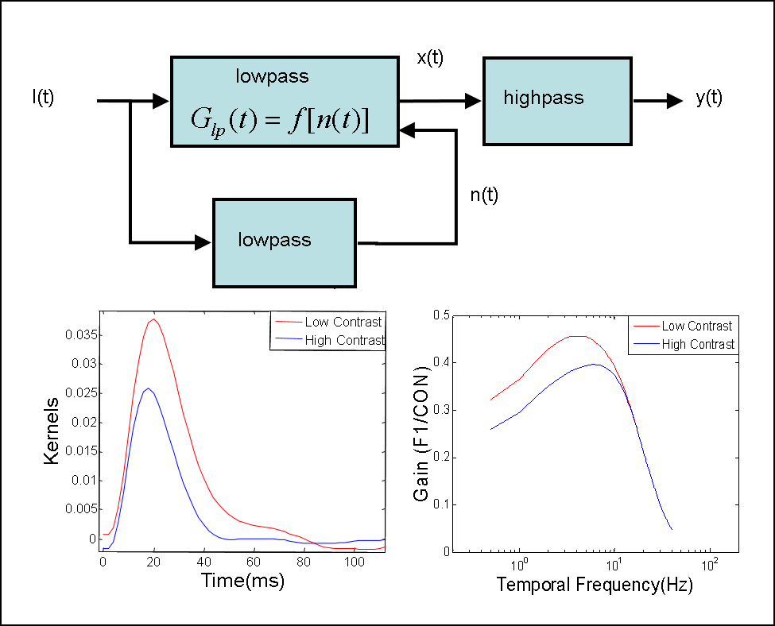
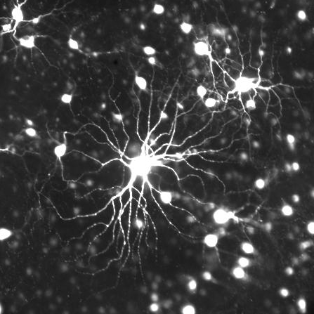

OCULAR NEUROSCIENCE AND NEUROENGINEERING LAB
OCULAR NEUROSCIENCE AND NEUROENGINEERING LAB
OCULAR NEUROSCIENCE AND NEUROENGINEERING LAB
OCULAR NEUROSCIENCE AND NEUROENGINEERING LAB
BME 4508/6491: Biomedical Signals & Systems Analysis:

The course is intended for students with limited background in linear/nonlinear analysis of dynamical signals and systems. The objective is to equip upper-level undergraduate and graduate engineering students with skills in the graphical depiction, mathematical description, functional characterization, and quantitative modeling of physiological signals and systems. Course topics are applied to biochemical, bioelectrical, and biomechanical processes through in-class examples, computer simulations, and homework problems that often involve MATLAB programming.

BME 4409/6409: Engineering Physiology:
The objective of the course is to impart upper-level undergraduate and graduate engineering students with core knowledge of physiological systems and processes and quantitative understanding of basic cell and tissue functions. The content and delivery of material is aimed primarily at students with little prior exposure to physiology concepts, methods, and terminology. The volume of information is unavoidably large, so lectures are designed to reinforce key processes and principles discussed in assigned readings. A secondary aim is to introduce students to classic physiological models and biomedical technologies to foster appreciation of computational and translational perspectives. This is accomplished via computer simulations and lab tours. Covered systems include nerve, muscle, heart, and lung.